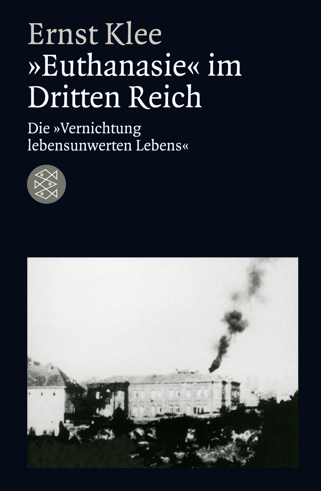

1:05:53 · 11 OPERE
Come si arriva ad una tirannide?
Il filo del discorso
Dr Divago affronta la domanda su come una società arrivi ad accettare la tirannide, concentrandosi sul rapporto fra legge, ragione e responsabilità individuale. Il discorso di Pericle nella storia di Tucidide e il richiamo a Niemöller gli permettono di discutere diritti, maggioranza e isolamento progressivo dei gruppi. Passa poi alla psicologia sociale e a tre film, oltre a un episodio di Madam Secretary, per interrogarsi sull’influenza culturale, sull’assuefazione e sulla distanza fra autorità visibile e capacità di giudizio. Il confronto con la pandemia esprime la sua interpretazione politica: somiglianze narrative e previsioni non sono prove di un coordinamento criminale, e le accuse a istituzioni e persone restano attribuite al relatore. Nella parte finale la memoria del dopoguerra e il libro di Ernst Klee sulla distruzione nazista delle vite giudicate indegne introducono il tema della disumanizzazione; Francesco d’Assisi e il passo evangelico sui bambini offrono un contrappunto di fraternità e disponibilità a imparare. La scheda distingue analogie, citazioni probabili e documenti identificati, correggendo cronologie e attribuzioni incerte senza assumere come fatti le generalizzazioni sanitarie, storiche o psicologiche del parlato.
I libri nel discorso

La guerra del Peloponneso
Copertina: Einaudi-Gallimard · Biblioteca della Pléiade · 1997
Copertina autentica controllata visivamente. Edizione di riferimento, non identificata come quella usata nel video.
Titolo e Tucidide espliciti; Pericle su governo dei molti e uguaglianza, riscontrato in II.37.
Passaggio 8:31 ↗ · Fonti e libro ↗
Costituzione della Repubblica Italiana
Identificazione probabile
Copertina dell’edizione Intra aggiornata al 2023: Intra · 2023 · introduzione di Umberto Vincenti
Copertina autentica del testo integrale, aggiornata alla legge costituzionale 26 settembre 2023 n.1. È successiva al filmato del 2019 e non rappresenta la versione storica letta dal relatore. Umberto Vincenti firma l’introduzione.
Le costituzioni europee e sovranità popolare sono discusse; il successivo riferimento alla Costituzione italiana e ai suoi autori conferma il documento, senza attribuire un articolo alla sola parafrasi.
Passaggio 9:43 ↗ · Fonti e libro ↗
Prima vennero… (First They Came…)
Identificazione probabile
Fotografia del testo di Niemöller esposto all’USHMM: Dichiarazione del dopoguerra · fotografia della variante esposta all’USHMM
Fotografia autentica dell’allestimento nella mostra permanente USHMM, con il testo e visitatori. L’immagine documenta la variante museale che inizia con i socialisti; non viene presentata come manoscritto originale, copertina o variante esatta pronunciata nel video.
Testo prima vennero, poi vennero a prendere me parafrasato; autore detto vescovo tedesco, normalizzato con cautela al pastore Niemöller dal riconoscibile passo. Più versioni postbelliche, non poesia originale unica.
Passaggio 14:17 ↗ · Fonti e libro ↗Contagion
Copertina: Warner Bros. · key art digitale di Contagion (2011)
Key art autentico dal collegamento immagine della pagina ufficiale Warner. È materiale promozionale digitale del film, non copertina libraria né prova di una particolare edizione DVD citata.
Titolo inglese e anno 2011 pronunciati; interpretazione politica distinta dalla trama del film.
Passaggio 16:17 ↗ · Fonti e libro ↗The Common Defense (Madam Secretary, stagione 5, episodio 17)
Copertina: Apple TV / CBS · immagine ufficiale dell’episodio 5×17 · prima americana 24 marzo 2019
Immagine autentica associata esattamente alla pagina dell’episodio 5×17 nel catalogo Apple TV; mostra un personaggio in ufficio. È un fotogramma illustrativo dell’episodio, non una locandina autonoma e non una copertina di libro o DVD. Immagine dalla pagina ufficiale della serie. Le immagini della stagione non accessibili non sono state usate.
Madam Secretary, quinta stagione, episodio 17 e prima americana 24 marzo 2019 espliciti; titolo The Common Defense riscontrato nel catalogo ufficiale Apple TV.
Passaggio 17:17 ↗ · Fonti e libro ↗Il mio grosso grasso matrimonio greco / My Big Fat Greek Wedding
Copertina: VOYO / PRO TV · immagine ufficiale del film del 2002
Fotografia promozionale autentica del primo film pubblicata come immagine principale dalla piattaforma VOYO: la coppia degli sposi in automobile. Non proviene dai sequel, non è una locandina e non è presentata come copertina libraria. Titolo originale, regia e anno riscontrati anche nel catalogo AFI; il fotogramma non è certificato come quello mostrato nel video del relatore.
Titolo inglese e italiano riconoscibili nella fonte e battuta testa/collo; film del 2002 riscontrato presso AFI.
Passaggio 23:58 ↗ · Fonti e libro ↗Dr. Strangelove or: How I Learned to Stop Worrying and Love the Bomb / Il dottor Stranamore
Copertina: Sony Pictures · key art digitale del film del 1964
Materiale promozionale dalla pagina ufficiale Sony Pictures. Sono leggibili titolo e sottotitolo; immagine di Peter Sellers e sala di comando. Materiale promozionale digitale attuale, senza attribuirlo a una specifica tiratura di manifesto del 1964 o a una copertina libraria.
Kubrick, Dottor Stranamore e sottotitolo espliciti; anno riscontrato 1964, non precisato dal relatore.
Passaggio 28:47 ↗ · Fonti e libro ↗
Critica della ragion pratica
Identificazione probabile
Copertina: Bompiani, 2000
Kant e rapporto fra cielo stellato e legge morale: titolo non pronunciato, identificazione probabile della conclusione dell’opera.
Passaggio 35:09 ↗ · Fonti e libro ↗
»Euthanasie« im Dritten Reich. Die »Vernichtung lebensunwerten Lebens«
Copertina: FISCHER Taschenbuch · edizione riveduta 2010 · ISBN 9783596186747
Copertina dell’edizione riveduta del 2010, dal catalogo ufficiale Fischer. Non attribuita questa specifica edizione alla copia del video. Il precedente titolo del 1983 è documentato dalla pagina autore. Nessun contenuto del volume si considera letto integralmente per il solo controllo dei metadati.
Ernst Klee, distruzione della vita priva di valore e eutanasia nel Terzo Reich espliciti. Titolo riscontrato nel catalogo Fischer; nessuna edizione mostrata assegnata.
Passaggio 54:41 ↗ · Fonti e libro ↗Cantico delle creature / Cantico di frate Sole
Identificazione probabile
Copertina: Raccolta La Regola e altri scritti · San Paolo · eBook 2015 · ISBN 9788821589973
Copertina autentica della raccolta La Regola e altri scritti di Francesco d’Assisi, che il catalogo San Paolo dichiara comprendere il Cantico delle creature. Si dichiara la raccolta: non è la copertina di un’edizione autonoma del solo Cantico e non è l’edizione citata o mostrata nel video. ISBN dell’eBook della pagina, distinto dalle altre edizioni cartacee suggerite dal sito.
Francesco d’Assisi, famoso testo e sorella morte riconoscibili; titolo non pronunciato. Identificazione probabile con Cant.27 / FF263, non citazione letterale della frase sui fratelli animali.
Passaggio 55:31 ↗ · Fonti e libro ↗
Bibbia
Copertina: San Paolo, 2014 · Nuova Versione dai Testi Antichi · edizione di riferimento
I Vangeli sono nominati e il passo lasciate che i bambini vengano a me parafrasato; riscontro Mc10,13–16, con paralleli sinottici. Nessun Vangelo o edizione esclusivi assegnati.
Passaggio 1:04:01 ↗ · Fonti e libro ↗